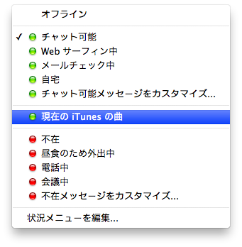

ここでは、XMPPが具体的にどのようなサービスを提供できるプロトコルなのかを紹介していきます。
おそらくこの文書を読んでいる人の中で、「何らかのインスタントメッセンジャーを使ったことが一度もない」という人はいないと思いますが、インスタントメッセンジャーアプリケーションとは一体どんなものであるかをおさらいしながら、登場するデータや用語を整理していきましょう。
細かい仕様は後回しにして、まずはクライアントアプリケーションであるiChatのビジュアルを通して見ていきましょう。
正確には、XMPPというより、XMPPのコア仕様(RFC6120)とその上でメッセージングサービスを提供するためのIM仕様(RFC6121)をあわせた状態で紹介しています。XMPPのコア仕様だけを利用して、IMではないサービスを提供することも可能ですが、むしろそれは高度な利用法といえるでしょう。
ここでは、理解のしやすさを優先し、コア仕様とIM仕様の区別をせずに説明していきます。
サービスにログインすると、まずは上の画像のように、友人情報のリストが表示されます。
XMPPでは、このような友人情報のリストをロスター ( roster )と呼びます。直訳すると名簿ですね。
プロトコルによっては、登録された友人の事をバディーと呼び、そのリストはバディーリストと呼ばれたりします。単純にフレンドリストと呼ばれることもあります。
このように、XMPPのサービスでは、ログインすると、まずはロスターを同期するところから始まります。
リストに表示されている情報をよく見てみましょう。
オフラインの友人の情報がグレーアウトされているのがわかるでしょうか？
また、オンラインの友人の情報はくっきりと表示され、名前の左に緑色のライトのアイコンがついています。
このように、現在のユーザーの状態を表現するデータのことを、プレゼンスと呼びます。
プレゼンスが存在すれば、その友人がオンラインであることがわかります。それだけでなく、チャット可能状態(緑のライト)だとか離席中(赤いライト)だとかを判断することもできます。
このまま眺めていると、友人がログインしてオフラインからオンラインに切り替わったり、離席してライトが赤くなったりするなど、友人のプレゼンスが変動していくのがわかります。
当然、自分のプレゼンスも変更できます。
このように、友人のリアルタイムのプレゼンスを視認することができますし、自分のプレゼンスをリアルタイムで友人に伝えることが出来ます。 メッセンジャーというとメッセージにばかり目がいきますが、このように、ロスターやプレゼンスの管理もメッセンジャーサービスを提供する上で重要な要素です。
友人のリストの中から話しかけたい相手を見つけ、会話を楽しみましょう。
プレゼンスの存在により、相手がオンラインであることを確認したうえで話かけることが出来ます。
それによって、メールとは違ったリアルタイムの会話が楽しめます。
ここでいうメッセージとは、画像のイメージのとおり、いわゆるチャットテキストの事になります。プロトコルによっては、いわゆるパケットやフレームのように、サーバーやクライアントのようなノード間で転送されるデータの一単位の塊のことをメッセージと呼ぶことがあります。
特にXMPPは、そのデータ配送の性質から、AMQPというプロトコルと並べて語られることがあります。AMQPはメッセージキューのための仕様を定めるもので、そこで言うメッセージとは、パケットのような意味合いになり、チャットテキストの意味ではありません。
メッセージとは、XMPPプロトコルのコンテキストにおいてはチャットテキスト、メッセージキューなどのコンテキストにおいてはパケットという意味合いになることを理解し、混乱しないように気をつけましょう。
Oceanでサポートしているクラスターシステムでは、メッセージキューの利用を前提としています。クラスターガイドにて詳しく解説します。
上で友人情報がいくつかすでに存在しているロスタの画像を表示しましたが、当然ながら最初から友人情報が埋まっているわけではなく、友人情報の新規登録や削除の機能がサポートされている必要があります。
ロスタに存在する友人との関係を管理するのがサブスクリプション ( subscription )です。日本語だと購読と訳されることが多いようですが、現在ならTwitterでいうところのフォローと言ったほうがわかりやすいかもしれません。ですので、ここでは"subscribe"を「購読する」ではなく、「フォローする」と表現しながら話をすすめることにします。
次のような機能がサポートされています。
相手との関係性を表すために、次の種類のサブスクリプションタイプがあります。
| 種類 | 概要 |
|---|---|
| TO | その相手を一方的にフォローしている。そのユーザーのプレゼンスが変更されたら通知される。 |
| FROM | その相手から一方的にフォローされている。自分のプレゼンスが変更されたら相手に通知される。 |
| BOTH | お互いにフォローしあっている。それぞれのプレゼンスが変更されたら、相手に通知される。 |
| NONE | フォローはお互いにしてない。 |
XMPPでどのようなサービスが提供できるのか、クライアントアプリケーションを通して確認し、どのようなデータが扱われているのかを把握できました。
次は、このようなGUIアプリケーションの裏で、実際にクライアントとサーバーがどのようなやりとりをしているのかを見ていきます。